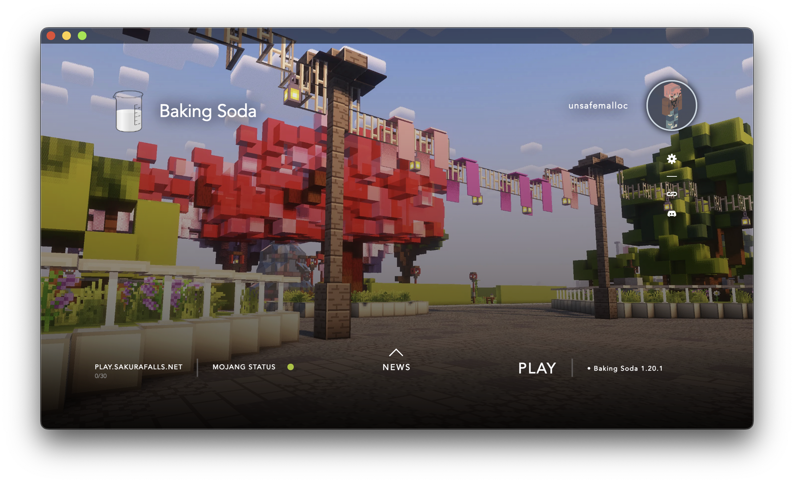

Baking Soda
－ Baking Soda is no BS －
It's a modern mod-pack for performance,
perfect for Roleplay servers.

Supported & maintained by SakuraFalls
Powered by HeliosLauncher
Enhance your game experience, without any sacrifices.
Baking Soda comes with everything you might need.
Then, if you don't like something, no worries.
Just remove the mod or resource pack, and voilà.
Features
Can easily double or triples frame rates
Supports OptiFine resource packs & capes
Supports shader packs compatible with Iris
Host singleplayer worlds with e4mc
Download worlds for personal use¹ with WorldTools
3rd person free-look
Create command macros (key-binds)
Display player heads in chat
Adjust fly speed in Creative Mode
Change the font you write with in chat
Emoji selector built into the chat
Longer chat history than Vanilla
Change version at run-time using ViaVersion
Game runs slower when tabbed out to prevent lag
macOS Input Fixes and performance updates
Custom Discord status on your profile
Something missing?
Add your own mods by using the launcher!